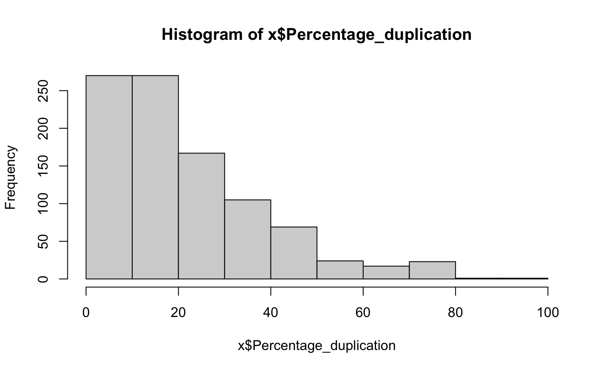
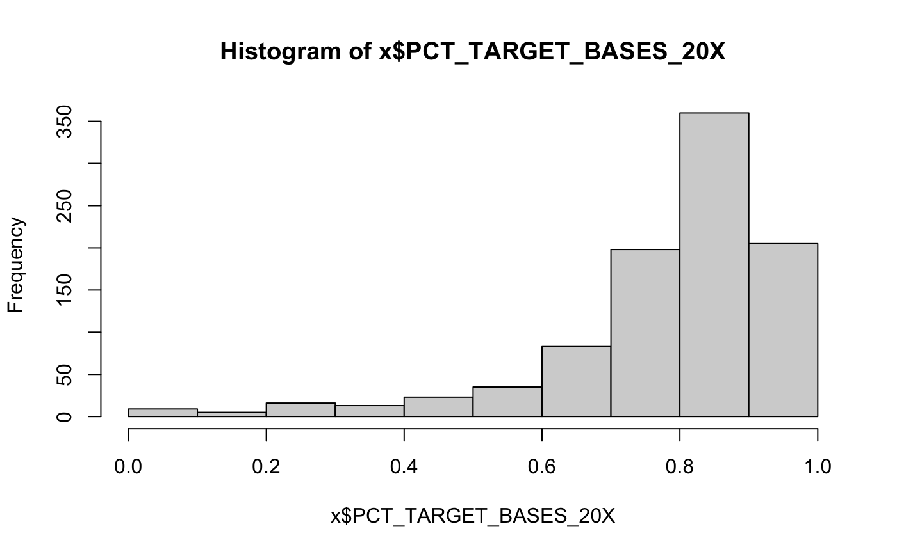
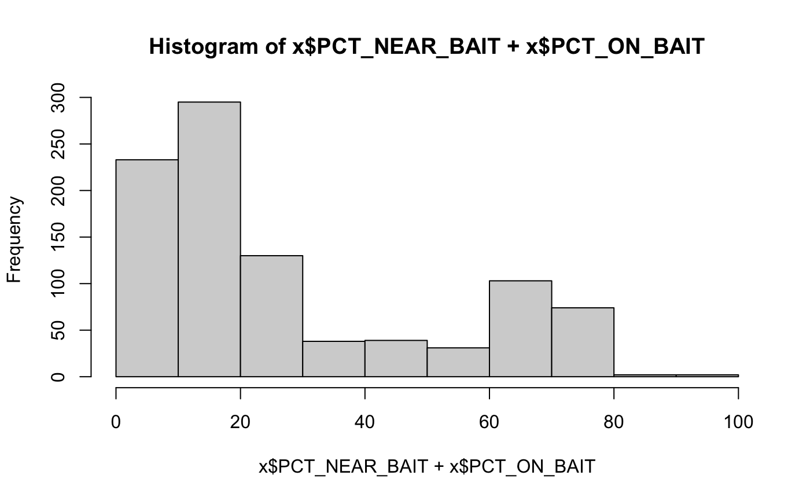

DNA sequencing QC metrics
target_dna_qc()
x = target_dna_qc()#> #> #> #>#>#> #> #> #> col_character() #>#>#> #> #> #> col_character() #>#>#> #> #> #> col_character() #>#>#> Warning: The `x` argument of `as_tibble.matrix()` must have column names if `.name_repair` is omitted as of tibble 2.0.0. #> Using compatibility `.name_repair`. #> This warning is displayed once every 8 hours. #> Call `lifecycle::last_warnings()` to see where this warning was generated.head(x)#> # A tibble: 6 x 46 #> Sample Type dataset bamFile Reads_generated Reads_mapped UNMAPPED_READS #> <chr> <chr> <chr> <chr> <dbl> <dbl> <dbl> #> 1 0A4HLD Norm… discov… 0A4HLD… 283058872 272586395 10472477 #> 2 0A4HLD Tumor discov… 0A4HLD… 170825466 166919706 3905760 #> 3 0A4HMC Norm… discov… 0A4HMC… 1972824516 1936120262 36704254 #> 4 0A4HMC Tumor discov… 0A4HMC… 2018527364 1987585279 30942085 #> 5 0A4HX8 Norm… discov… 0A4HX8… 345439442 315164331 30275111 #> 6 0A4HX8 Tumor discov… 0A4HX8… 374712362 361488204 13224158 #> # … with 39 more variables: Percentage_mapped <dbl>, Reads_duplicated <dbl>, #> # Percentage_duplication <dbl>, MEDIAN_INSERT_SIZE <dbl>, #> # MAX_INSERT_SIZE <dbl>, STANDARD_DEVIATION <dbl>, MEAN_INSERT_SIZE <dbl>, #> # GENOME_TERRITORY <dbl>, wgs_MEAN_COVERAGE <dbl>, wgs_SD_COVERAGE <dbl>, #> # wgs_MEDIAN_COVERAGE <dbl>, wgs_PCT_EXC_UNPAIRED <dbl>, #> # wgs_PCT_EXC_CAPPED <dbl>, wgs_PCT_EXC_TOTAL <dbl>, wgs_PCT_5X <dbl>, #> # wgs_PCT_10X <dbl>, wgs_PCT_20X <dbl>, wgs_PCT_50X <dbl>, #> # wgs_PCT_100X <dbl>, PCT_ON_BAIT <dbl>, PCT_NEAR_BAIT <dbl>, #> # MEAN_READ_LENGTH <dbl>, BAIT_TERRITORY <dbl>, TARGET_TERRITORY <dbl>, #> # MEAN_BAIT_COVERAGE <dbl>, MEAN_TARGET_COVERAGE <dbl>, #> # PCT_TARGET_BASES_2X <dbl>, PCT_TARGET_BASES_20X <dbl>, #> # PCT_TARGET_BASES_50X <dbl>, PCT_TARGET_BASES_100X <dbl>, #> # PCT_USABLE_BASES_ON_BAIT <dbl>, PCT_USABLE_BASES_ON_TARGET <dbl>, #> # FOLD_ENRICHMENT <dbl>, HS_LIBRARY_SIZE <dbl>, qMean <dbl>, #> # PCT_EXC_DUPE <dbl>, PCT_EXC_BASEQ <dbl>, PCT_EXC_OVERLAP <dbl>, `Average #> # Insert Size` <dbl>colnames(x)#> [1] "Sample" "Type" #> [3] "dataset" "bamFile" #> [5] "Reads_generated" "Reads_mapped" #> [7] "UNMAPPED_READS" "Percentage_mapped" #> [9] "Reads_duplicated" "Percentage_duplication" #> [11] "MEDIAN_INSERT_SIZE" "MAX_INSERT_SIZE" #> [13] "STANDARD_DEVIATION" "MEAN_INSERT_SIZE" #> [15] "GENOME_TERRITORY" "wgs_MEAN_COVERAGE" #> [17] "wgs_SD_COVERAGE" "wgs_MEDIAN_COVERAGE" #> [19] "wgs_PCT_EXC_UNPAIRED" "wgs_PCT_EXC_CAPPED" #> [21] "wgs_PCT_EXC_TOTAL" "wgs_PCT_5X" #> [23] "wgs_PCT_10X" "wgs_PCT_20X" #> [25] "wgs_PCT_50X" "wgs_PCT_100X" #> [27] "PCT_ON_BAIT" "PCT_NEAR_BAIT" #> [29] "MEAN_READ_LENGTH" "BAIT_TERRITORY" #> [31] "TARGET_TERRITORY" "MEAN_BAIT_COVERAGE" #> [33] "MEAN_TARGET_COVERAGE" "PCT_TARGET_BASES_2X" #> [35] "PCT_TARGET_BASES_20X" "PCT_TARGET_BASES_50X" #> [37] "PCT_TARGET_BASES_100X" "PCT_USABLE_BASES_ON_BAIT" #> [39] "PCT_USABLE_BASES_ON_TARGET" "FOLD_ENRICHMENT" #> [41] "HS_LIBRARY_SIZE" "qMean" #> [43] "PCT_EXC_DUPE" "PCT_EXC_BASEQ" #> [45] "PCT_EXC_OVERLAP" "Average Insert Size"